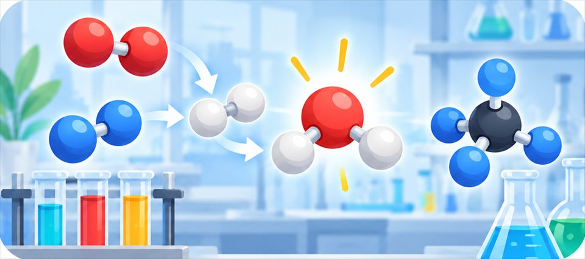
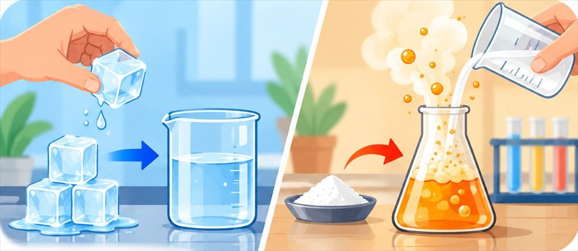
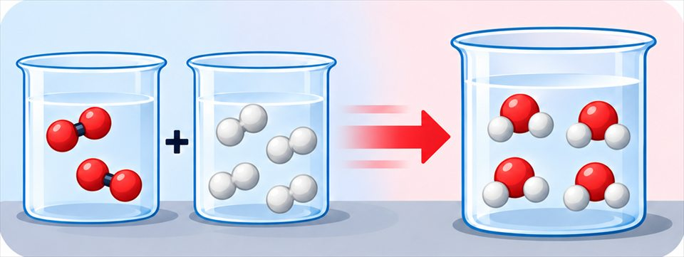

The big idea driving this unit
In a chemical reaction, atoms rearrange into new substances with new properties, releasing or absorbing energy, but no atoms are created or destroyed, so mass is conserved. The same chemistry turns natural resources like crude oil into synthetic materials, with benefits and costs.
Chapters in this unit
-
1

Molecular CompositionTwo clear liquids start fizzing and turn ice-cold the instant they're combined, so what is happening at the level of atoms and molecules to cause that?MS-PS1-1MS-PS1-2MS-PS1-6 -
2

Physical and Chemical PropertiesWhen a shiny iron nail left out in the rain slowly turns orange, flaky, and crumbly, did the iron just change shape, or did it become a completely different substance?MS-PS1-2MS-PS1-5 -
3

Conservation of MatterIf you sealed a flask, weighed it, let a dramatic chemical reaction happen completely inside, and weighed it again, would the scale move even a tiny fraction of a gram?MS-PS1-1MS-PS1-5 -
4
 Synthetic vs. NaturalNylon backpack straps and a cotton t-shirt both start from raw materials found in nature, so what makes only one of them synthetic?MS-PS1-3
Synthetic vs. NaturalNylon backpack straps and a cotton t-shirt both start from raw materials found in nature, so what makes only one of them synthetic?MS-PS1-3